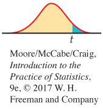
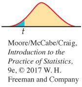
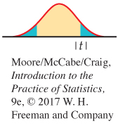

7.2 7.2 Comparing Two Means
When you complete this section, you will be able to:
• Describe a level C confidence interval for the difference between two population means in terms of an estimate and its margin of error.
• Construct a level C confidence interval for the difference between two population means μ1 −μ2 from two SRSs of size n1 and n2, respectively.
• Perform a two-sample t significance test and summarize the results.
• Explain when the t procedures can be useful for non-Normal data.
433
A psychologist wants to compare male and female college students’ impressions of personality based on selected Facebook pages. A nutritionist is interested in the effect of increased calcium on blood pressure. A bank wants to know which of two incentive plans will most increase the use of its debit cards. Two-sample problems such as these are among the most common situations encountered in statistical practice.
TWO-SAMPLE PROBLEMS
• The goal of inference is to compare the means of the response variable in two groups.
• Each group is considered to be a sample from a distinct population.
• The responses in each group are independent of those in the other group.
randomized comparative experiment, p. 177
side-by-side boxplots, p. 37
A two-sample problem can arise from a randomized comparative experiment that randomly divides the subjects into two groups and exposes each group to a different treatment. A two-sample problem can also arise when comparing random samples separately selected from two populations. Unlike the matched pairs designs studied earlier, there is no matching of the units in the two samples, and the two samples may be of different sizes. As a result, inference procedures for two-sample data differ from those for matched pairs.
We can present two-sample data graphically by a back-to-back stemplot (for small samples) or by side-by-side boxplots (for larger samples). Now we will apply the ideas of formal inference in this setting. When both population distributions are symmetric, and especially when they are at least approximately Normal, a comparison of the mean responses in the two populations is most often the goal of inference.
We have two independent samples, from two distinct populations (such as subjects given the latest Apple iPhone and those given the latest Samsung Galaxy smartphone). The same response variable—say, battery life—is measured for both samples. We will call the variable x1 in the first population and x2 in the second because the variable may have different distributions in the two populations. Here is the notation that we will use to describe the two populations:
| Population | Variable | Mean | Standard deviation |
|---|---|---|---|
| 1 | x1 | μ1 | σ1 |
| 2 | x2 | μ2 | σ2 |
We want to compare the two population means, either by giving a confidence interval for μ1 −μ2 or by testing the hypothesis of no difference, H0: μ1 = μ2.
Inference is based on two independent SRSs, one from each population. Here is the notation that describes the samples:
| Population | Sample size | Sample mean |
Sample standard deviation |
|---|---|---|---|
| 1 | n1 | s1 | |
| 2 | n2 | s2 |
434
Throughout this section, the subscripts 1 and 2 show the population to which a parameter or a sample statistic refers.
The two-sample z statistic
The natural estimator of the difference μ1 −μ2 is the difference between the sample means, . If we are to base inference on this statistic, we must know its sampling distribution. Here are some facts from our study of probability:
addition rule for means, p. 254
• The mean of the difference is the difference between the means μ1 −μ2. This follows from the addition rule for means and the fact that the mean of any is the same as the mean μ of the population.
• The variance of the difference is the sum of their variances, which is
addition rule for variances, p. 258
linear combination of Normal random variables p. 304
This follows from the addition rule for variances. Because the samples are independent, their sample means and are independent random variables.
• If the two population distributions are both Normal, then the distribution of is also Normal. This is true because each sample mean alone is Normally distributed and because a difference between independent Normal random variables is also Normal.
We now know the sampling distribution of when both populations are Normally distributed. The mean and variance of this distribution can be expressed in terms of the parameters of the two populations.
EXAMPLE 7.10
Heights of 10-year-old girls and boys. A fourth-grade class has 12 girls and 8 boys. The children’s heights are recorded on their 10th birthdays. What is the chance that the girls are taller than the boys? Of course, it is very unlikely that all the girls are taller than all the boys. We translate the question into the following: what is the probability that the mean height of the girls is greater than the mean height of the boys?
Based on information from the National Health and Nutrition Examination Survey, we assume that the heights (in inches) of 10-year-old girls are N(56.9, 2.8) and the heights of 10-year-old boys are N(56.0, 3.5).22 The heights of the students in our class are assumed to be random samples from these populations. The two distributions are shown in Figure 7.11(a).
The difference between the female and male mean heights varies in different random samples. The sampling distribution has mean
μ1 −μ2 = 56.9 − 56.0 = 0.9 inches
and variance
= 2.18
435
The standard deviation of the difference in sample means is, therefore, inches.
If the heights vary Normally, the difference in sample means is also Normally distributed. The distribution of the difference in heights is shown in Figure 7.11(b). We standardize by subtracting its mean (0.9) and dividing by its standard deviation (1.48). Therefore, the probability that the girls, on average, are taller than the boys is
= P(Z > −0.61) = 0.7257
Even though the population mean height of 10-year-old girls is greater than the population mean height of 10-year-old boys, the probability that the sample mean of the girls is greater than the sample mean of the boys in our class is only 73%. Large samples are needed to see the effects of small differences.

As Example 7.10 reminds us, any Normal random variable has the N(0, 1) distribution when standardized. We have arrived at a new z statistic.
TWO-SAMPLE z STATISTIC
Suppose that is the mean of an SRS of size n1 drawn from an N(μ1, σ1) population and that is the mean of an independent SRS of size n2 drawn from an N(μ2, σ2) population. Then the two-sample z statistic
has the standard Normal N(0, 1) sampling distribution.
436
In the unlikely event that both population standard deviations are known, the two-sample z statistic is the basis for inference about μ1 −μ2. Exact z procedures are seldom used, however, because σ1 and σ2 are rarely known. In Chapter 6, we discussed the one-sample z procedures in order to introduce the ideas of inference. Here we move directly to the more useful t procedures.
The two-sample t procedures
Suppose now that the population standard deviations σ1 and σ2 are not known. We estimate them by the sample standard deviations s1 and s2 from our two samples. Following the pattern of the one-sample case, we substitute the standard errors for the standard deviations used in the two-sample z statistic. The result is the two-sample t statistic:
Unfortunately, this statistic does not have a t distribution. A t distribution replaces the N(0, 1) distribution only when a single standard deviation (σ) in a z statistic is replaced by its sample standard deviation (s). In this case, we replace two standard deviations (σ1 and σ2) by their estimates (s1 and s2), which does not produce a statistic having a t distribution.
Nonetheless, we can approximate the distribution of the two-sample t statistic by using the t(k) distribution with an approximation for the degrees of freedom kdf approximation. We use these approximations to find approximate values of t* for confidence intervals and to find approximate P-values for significance tests. Here are two approximations:
1. Use an approximation known as the Satterthwaite approximationSatterthwaite approximation for the value of k. It is calculated from the data and, in general, will not be a whole number.
2. Use k equal to the smaller of n1 − 1 and n2 − 1.
In practice, the choice of approximation rarely makes a difference in our conclusion. Most statistical software uses the first option to approximate the t(k) distribution for two-sample problems unless the user requests another method. Use of this approximation without software is a bit complicated; we give the details later in this section (see 447).
If you are not using software, the second approximation is preferred. This approximation is appealing because it is conservative.23 Margins of error for the level C confidence intervals are a bit larger than they need to be, so the true confidence level is larger than C. For significance testing, the P-values are a bit larger; thus, for tests at a fixed significance level, we are a little less likely to reject H0 when it is true.
The two-sample t confidence interval
We now apply the basic ideas about t procedures to the problem of comparing two means when the standard deviations are unknown. We start with confidence intervals.
437
THE TWO-SAMPLE t CONFIDENCE INTERVAL
Suppose that an SRS of size n1 is drawn from a Normal population with unknown mean μ1 and that an independent SRS of size n2 is drawn from another Normal population with unknown mean μ2. The confidence interval for μ1 −μ2 given by
has confidence level at least C no matter what the population standard deviations may be. The quantity
is the margin of error. Here, t* is the value for the t(k) density curve with area C between −t* and t*. The value of the degrees of freedom k is approximated by software, or we use the smaller of n1 − 1 and n2 − 1. Similarly, we can use either software or the conservative approach with Table D to approximate the value of t*.
EXAMPLE 7.11
Directed reading activities assessment. An educator believes that new directed reading activities in the classroom will help elementary school pupils improve some aspects of their reading ability. She arranges for a third-grade class of 21 students to take part in these activities for an eight-week period. A control classroom of 23 third-graders follows the same curriculum without the activities. At the end of the eight weeks, all students are given a Degree of Reading Power (DRP) test, which measures the aspects of reading ability that the treatment is designed to improve. The data appear in Table 7.3.24
DRP
| Treatment group | Control group | ||||||
|---|---|---|---|---|---|---|---|
| 24 | 61 | 59 | 46 | 42 | 33 | 46 | 37 |
| 43 | 44 | 52 | 43 | 43 | 41 | 10 | 42 |
| 58 | 67 | 62 | 57 | 55 | 19 | 17 | 55 |
| 71 | 49 | 54 | 26 | 54 | 60 | 28 | |
| 43 | 53 | 57 | 62 | 20 | 53 | 48 | |
| 49 | 56 | 33 | 37 | 85 | 42 | ||
The design of the study in Example 7.11 is not ideal. Random assignment of students was not possible in a school environment, so existing third-grade classes were used. The effect of the reading programs is, therefore, confounded with any other differences between the two classes. The classes were chosen to be as similar as possible—for example, in terms of the social and economic status of the students. Extensive pretesting showed that the two classes were, on the average, quite similar in reading ability at the beginning of the experiment. To avoid the effect of two different teachers, the researcher herself taught reading in both classes during the eight-week period of the experiment. Therefore, we can be somewhat confident that the two-sample test is detecting the effect of the treatment and not some other difference between the classes. This example is typical of many situations in which an experiment is carried out but randomization is not possible.
confounding, p. 150
438
EXAMPLE 7.12
Computing an approximate 95% confidence interval for the difference in means. First examine the data:
| Control | Treatment | |
| 970 | 1 | |
| 860 | 2 | 4 |
| 773 | 3 | 3 |
| 8632221 | 4 | 3334699 |
| 5543 | 5 | 23467789 |
| 20 | 6 | 127 |
| 7 | 1 | |
| 5 | 8 |
DRP
The back-to-back stemplot suggests that there is a mild outlier in the control group but no deviation from Normality serious enough to forbid use of t procedures. Separate Normal quantile plots for both groups (Figure 7.12) confirm that both distributions are approximately Normal. The scores of the treatment group appear to be somewhat higher than those of the control group. The summary statistics are
439
| Group | n | s | |
|---|---|---|---|
| Treatment | 21 | 51.48 | 11.01 |
| Control | 23 | 41.52 | 17.15 |
To describe the size of the treatment effect, let’s construct a confidence interval for the difference between the treatment group and the control group means. The interval is
= 9.96 ± 4.31t*
| df = 20 | |||
| t* | 1.725 | 2.086 | 2.197 |
| C | 0.90 | 0.95 | 0.96 |
The second degrees of freedom approximation uses the t(20) distribution.
Table D gives t* = 2.086. With this approximation, we have
9.96 ± (4.31 × 2.086) = 9.96 ± 8.99 = (1.0, 18.9)
We estimate the mean improvement to be about 10 points, with a margin of error of almost 9 points. Unfortunately, the data do not allow a very precise estimate of the size of the average improvement.
USE YOUR KNOWLEDGE
Question 7.48
7.48 Two-sample t confidence interval. Suppose a study similar to Example 7.11 was performed using two second-grade classes. Assume the summary statistics are , , s1 = 11.53, s2 = 15.33, n1 = 26, and n2 = 24. Find a 95% confidence interval for the difference between the treatment (Group 1) and the control (Group 2) means using the second approximation for degrees of freedom. Also write a one-sentence summary of what this confidence interval says about the difference in means.
Question 7.49
7.49 Smaller sample sizes. Refer to the previous exercise. Suppose instead that the two classes are smaller, so the summary statistics are , , s1 = 11.53, s2 = 15.33, n1 = 16, and n2 = 14. Find a 95% confidence interval for the difference using the second approximation for degrees of freedom. Compare this interval with the one in the previous exercise and discuss the impact smaller sample sizes have on a confidence interval.
The two-sample t significance test
The same ideas that we used for the two-sample t confidence interval also apply to two-sample t significance tests. We can use either software or the conservative approach with Table D to approximate the P-value.
440
THE TWO-SAMPLE t SIGNIFICANCE TEST
Suppose that an SRS of size n1 is drawn from a Normal population with unknown mean μ1 and that an independent SRS of size n2 is drawn from another Normal population with unknown mean μ2. To test the hypothesis H0: μ1 −μ2 = Δ0, compute the two-sample t statistic
and use P-values or critical values for the t(k) distribution, where the degrees of freedom k either are approximated by software or are the smaller of n1 − 1 and n2 − 1.
EXAMPLE 7.13
Is there an improvement? For the DRP study described in Example 7.11 (page 437), we hope to show that the treatment (Group 1) performs better than the control (Group 2). For a formal significance test, the hypotheses are
H0: μ1 = μ2
Ha: μ1 >μ2
DRP
The two-sample t test statistic is
= 2.31
The P-value for the one-sided test is P(T ≥ 2.31). For the second approximation, the degrees of freedom k are equal to the smaller of
n1 − 1 = 21 − 1 = 20 and n2 − 1 = 23 − 1 = 22
| df = 20 | ||
| p | 0.02 | 0.01 |
| t* | 2.197 | 2.528 |
Comparing 2.31 with the entries in Table D for 20 degrees of freedom, we see that P lies between 0.01 and 0.02.
The data strongly suggest that directed reading activity improves the DRP score (t = 2.31, df = 20, 0.01 < P < 0.02).
USE YOUR KNOWLEDGE
Question 7.50
7.50 A two-sample t significance test. Refer to Exercise 7.48 (page 439). Perform a significance test at the 0.05 level to assess whether the average improvement is five points versus the alternative that it is greater than five points. Write a one-sentence conclusion.
441
Question 7.51
7.51 Interpreting the confidence interval. Refer to the previous exercise and Exercise 7.48. Can the confidence interval in Exercise 7.48 be used to determine whether the significance test of the previous exercise rejects or does not reject the null hypothesis? Explain your answer.
Most statistical software requires the raw data for analysis. A few, like Minitab, will also perform a t test on data in summarized form (such as the summary statistics table in Example 7.12, pages 438–439). It is always preferable to work with the raw data because one can also examine the data through plots such as the back-to-back stemplot and those in Figure 7.12.
EXAMPLE 7.14
Using software. Figure 7.13 shows JMP and Minitab output for the comparison of DRP scores. Both outputs include the 95% confidence interval and the significance test that the means are equal. JMP reports the difference as the mean of treatment minus the mean of control, while Minitab reports the difference in the opposite order.
DRP
442
Recall the confidence interval (treatment minus control) is
= 9.96 ± 4.31t*
From the JMP output, we see that the degrees of freedom under the first approximation are 37.9. Using these degrees of freedom, the interval is (1.2, 18.7). This interval, as expected, is more narrow than the confidence interval in Example 7.12 (pages 438–439), which uses the conservative approach. The difference, however, is pretty small.
For the significance test, the P-value for the one-sided significance test is P(T ≥ 2.31). JMP gives the approximate P-value as 0.0132, again using 37.9 as the degrees of freedom.
Minitab also uses the first degrees of freedom approximation but rounds the degrees of freedom down to the nearest integer (). As a result, the margin of error is slightly wider than that of JMP and the P-value of the significance test is slightly larger.
In order to get a confidence interval as part of the Minitab output, the two-sided alternative was considered. If your software gives you the P-value for only the two-sided alternative, 2P(T ≥ |t|), you need to divide the reported value by 2 after checking that the means differ in the direction specified by the alternative hypothesis.
Robustness of the two-sample procedures
The two-sample t procedures are more robust than the one-sample t methods. When the sizes of the two samples are equal and the distributions of the two populations being compared have similar shapes, probability values from the t table are quite accurate for a broad range of distributions when the sample sizes are as small as n1 = n2 = 5.25 When the two population distributions have different shapes, larger samples are needed.
The guidelines for the use of one-sample t procedures can be adapted to two-sample procedures by replacing “sample size” with the “sum of the sample sizes” n1 + n2. Specifically,
• If n1 + n2 is less than 15: Use t procedures if the data are close to Normal. If the data in either sample are clearly non-Normal or if outliers are present, do not use t.
• If n1 + n2 is at least 15 and less than 40: The t procedures can be used except in the presence of outliers or strong skewness.
• Large samples: The t procedures can be used even for clearly skewed distributions when the sample is large, roughly n1 + n2 ≥ 40.

These guidelines are rather conservative, especially when the two samples are of equal size. In planning a two-sample study, choose equal sample sizes if you can. The two-sample t procedures are most robust against non-Normality in this case, and the conservative probability values are most accurate.
443
Here is an example with large sample sizes that are almost equal. Even if the distributions are not Normal, we are confident that the sample means will be approximately Normal. The two-sample t test is very robust in this case.
EXAMPLE 7.15
Timing of food intake and weight loss. There is emerging evidence of a relationship between timing of feeding and weight regulation. In one study, researchers followed 402 obese or overweight individuals through a 20-week weight-loss treatment.26 To investigate the timing of food intake, participants were grouped into early eaters and late eaters, based on the timing of their main meal. Here are the summary statistics of their weight loss over the 20 weeks, in kilograms (kg):
| Group | n | s | |
|---|---|---|---|
| Early eater | 202 | 9.9 | 5.8 |
| Late eater | 200 | 7.7 | 6.1 |
The early eaters lost more weight on average. Can we conclude that these two groups are not the same? Or is this observed difference merely what we could expect to see given the variation among participants?
While other evidence suggests that early eaters should lose more weight, the researchers did not specify a direction for the difference. Thus, the hypotheses are
H0: μ1 = μ2
Ha: μ1 ≠ μ2
Because the samples are large, we can confidently use the t procedures even though we lack the detailed data and so cannot verify the Normality condition.
The two-sample t statistic is
= 3.71
| df = 100 | |
| p | 0.0005 |
| t* | 3.390 |
The conservative approach finds the P-value by comparing 3.71 to critical values for the t(199) distribution because the smaller sample has 200 observations. Because Table D does not contain a row for 199 degrees of freedom, we will be even more conservative and use the first row in the table with degrees of freedom less than 199. This means we’ll use the t(100) distribution to compute the P-value.
Our calculated value of t is larger than the p = 0.0005 entry in the table. We must double the table tail area p because the alternative is two-sided, so we conclude that the P-value is less than 0.001. The data give conclusive evidence that early eaters lost more weight, on average, than late eaters (t = 3.71, df = 100, P < 0.001).
444
In this example the exact P-value is very small because t = 3.71 says that the observed difference in means is over 3.5 standard errors above the hypothesized difference of zero (μ1 = μ2). In this study, the researchers also compared energy intake and energy expenditure between late and early eaters. Despite the observed weight loss difference of 2.2 kg, no significant differences in these variables were found.

In this and other examples, we can choose which population to label 1 and which to label 2. After inspecting the data, we chose early eaters as Population 1 because this choice makes the t statistic a positive number. This avoids any possible confusion from reporting a negative value for t. Choosing the population labels is not the same as choosing a one-sided alternative after looking at the data. Choosing hypotheses after seeing a result in the data is a violation of sound statistical practice.
Inference for small samples
Small samples require special care. We do not have enough observations to examine the distribution shapes, and only extreme outliers stand out. The power of significance tests tends to be low, and the margins of error of confidence intervals tend to be large. Despite these difficulties, we can often draw important conclusions from studies with small sample sizes. If the size of an effect is very large, it should still be evident even if the n’s are small.
EXAMPLE 7.16
Timing of food intake. In the setting of Example 7.15, let’s consider a much smaller study that collects weight loss data from only five participants in each eating group. Also, given the results of this past example, we choose the one-sided alternative. The data are
| Group | Weight loss (kg) | ||||
|---|---|---|---|---|---|
| Early eater | 6.3 | 15.1 | 9.4 | 16.8 | 10.2 |
| Late eater | 7.8 | 0.2 | 1.5 | 11.5 | 4.6 |
EATER
First, examine the distributions with a back-to-back stemplot (the data are rounded to the nearest integer).
| Early | Late | |
|---|---|---|
| 0 | 02 | |
| 96 | 0 | 58 |
| 0 | 1 | 2 |
| 75 | 1 |
While there is variation among weight losses within each group, there is also a noticeable separation. The early-eaters group contains four of the five largest losses, and the late-eaters group contains four of the five smallest losses. A significance test can confirm whether this pattern can arise just by chance or if the early-eaters group has a higher mean. We test
H0: μ1 = μ2
Ha: μ1 >μ2
The average weight loss is higher in the early-eater group (t = 2.28, df = 7.96, P = 0.0262). The difference in sample means is 6.44 kg.
445
Figure 7.14 gives outputs for this analysis from several software packages. Although the formats differ, the basic information is the same. All report the sample sizes, the sample means and standard deviations (or variances), the t statistic, and its P-value. All agree that the P-value is small, though some give more detail than others. Software often labels the groups in alphabetical order. Always check the means first and report the statistic (you may need to change the sign) in an appropriate way. Be sure to also mention the size of the effect you observed, such as “The mean weight loss for the early eaters was 6.44 kg higher than for the late eaters.”
446
There are two other things to notice in the outputs. First, SAS and SPSS only give results for the two-sided alternative. To get the P-value for the one-sided alternative, we must first check the mean difference to make sure it is in the proper direction. If it is, we divide the given P-value by 2. Also, SAS and SPSS report the results of two t procedures: a special procedure that assumes that the two population variances are equal and the general two-sample procedure that we have just studied. We don’t recommend the “equal-variances” procedures, but we describe them later, in the section on pooled two-sample t procedures.
447
Software approximation for the degrees of freedom
We noted earlier that the two-sample t statistic does not have a t distribution. Moreover, the distribution changes as the unknown population standard deviations and change. However, the distribution can be approximated by a t distribution with degrees of freedom given by
This is the approximation used by most statistical software. It is quite accurate when both sample sizes and are 5 or larger.
EXAMPLE 7.17
Degrees of freedom for directed reading assessment. For the DRP study of Example 7.11 (page 437), the following table summarizes the data:
| Group | n | s | |
|---|---|---|---|
| 1 | 21 | 51.48 | 11.01 |
| 2 | 23 | 41.52 | 17.15 |
For greatest accuracy, we will use critical points from the t distribution with degrees of freedom given by the preceding equation:
This is the value that we reported in Example 7.14 (pages 441–442), where we gave the results produced by software.
The number df given by the preceding approximation is always at least as large as the smaller of n1 − 1 and n2 − 1. On the other hand, the number df is never larger than the sum n1 + n2 − 2 of the two individual degrees of freedom. The number df is generally not a whole number. There is a t distribution with any positive degrees of freedom, even though Table D contains entries only for whole-number degrees of freedom. When the number df is small and is not a whole number, interpolation between entries in Table D may be needed to obtain an accurate critical value or P-value. Because of this and the need to calculate df, we do not recommend regular use of this approximation if a computer is not doing the arithmetic. With a computer, however, the more accurate procedures are painless.
448
USE YOUR KNOWLEDGE
Question 7.52
7.52 Calculating the degrees of freedom. Assume that , , , and . Find the approximate degrees of freedom.
The pooled two-sample t procedures
There is one situation in which a t statistic for comparing two means has exactly a t distribution. This is when the two Normal population distributions have the same standard deviation. As we’ve done with other t statistics, we will first develop the z statistic and then, from it, the t statistic. In this case, notice that we need to substitute only a single standard error when we go from the z to the t statistic. This is why the resulting t statistic has a t distribution.
Call the common—and still unknown—standard deviation of both populations σ. Both sample variances and estimate . The best way to combine these two estimates is to average them with weights equal to their degrees of freedom. This gives more weight to the sample variance from the larger sample, which is reasonable. The resulting estimator of is
This is called the pooled estimator of σ2pooled estimator of σ2 because it combines the information in both samples.
When both populations have variance σ2, the addition rule for variances says that has variance equal to the sum of the individual variances, which is
The standardized difference between means in this equal-variance case is, therefore,
This is a special two-sample z statistic for the case in which the populations have the same σ. Replacing the unknown σ by the estimate gives a t statistic. The degrees of freedom are , the sum of the degrees of freedom of the two sample variances. This t statistic is the basis of the pooled two-sample t inference procedures.
449
THE POOLED TWO-SAMPLE t PROCEDURES
Suppose that an SRS of size is drawn from a Normal population with unknown mean and that an independent SRS of size is drawn from another Normal population with unknown mean μ2. Suppose also that the two populations have the same standard deviation. A level C confidence interval for μ1 − μ2 is
Here, t*is the value for the density curve with area C between −t* and t*. The quantity
is the margin of error.
To test the hypothesis , compute the pooled two-sample t statistic
In terms of a random variable T having the distribution, the P-value for a test of against
Ha: μ1 − μ2 > Δ0 is P(T ≥ t) 
Ha: μ1 − μ2 < Δ0 is P(T ≤ t) 
Ha: μ1 − μ2 ≠ Δ0 is 2P(T ≥ |t|) 
EXAMPLE 7.18
Calcium and blood pressure. Does increasing the amount of calcium in our diet reduce blood pressure? Examination of a large sample of people revealed a relationship between calcium intake and blood pressure, but such observational studies do not establish causation. Animal experiments, however, showed that calcium supplements do reduce blood pressure in rats, justifying an experiment with human subjects. A randomized comparative experiment gave one group of 10 black men a calcium supplement for 12 weeks. The control group of 11 black men received a placebo that appeared identical. (In fact, a block design with black and white men as the blocks was used. We will look only at the results for blacks because the earlier survey suggested that calcium is more effective for blacks.) The experiment was double-blind. Table 7.4 gives the seated systolic (heart contracted) blood pressure for all subjects at the beginning and end of the 12-week period, in millimeters of mercury (mm Hg). Because the researchers were interested in decreasing blood pressure, Table 7.4 also shows the decrease for each subject. An increase appears as a negative entry.27
450
| Calcium Group | Placebo Group | ||||
|---|---|---|---|---|---|
| Begin | End | Decrease | Begin | End | Decrease |
| 107 | 100 | 7 | 123 | 124 | −1 |
| 110 | 114 | −4 | 109 | 97 | 12 |
| 123 | 105 | 18 | 112 | 113 | −1 |
| 129 | 112 | 17 | 102 | 105 | −3 |
| 112 | 115 | −3 | 98 | 95 | 3 |
| 111 | 116 | −5 | 114 | 119 | −5 |
| 107 | 106 | 1 | 119 | 114 | 5 |
| 112 | 102 | 10 | 114 | 112 | 2 |
| 136 | 125 | 11 | 110 | 121 | −11 |
| 102 | 104 | −2 | 117 | 118 | −1 |
| 130 | 133 | −3 | |||
BP_CA
As usual, we first examine the data. To compare the effects of the two treatments, take the response variable to be the amount of the decrease in blood pressure. Inspection of the data reveals that there are no outliers. Side-by-side boxplots and Normal quantile plots (Figure 7.15 and 7.16) give a more detailed picture. The calcium group has a somewhat short left tail, but there are no severe departures from Normality that will prevent use of t procedures. To examine the question of the researchers who collected these data, we perform a significance test.
451
EXAMPLE 7.19
Does increased calcium reduce blood pressure? Take Group 1 to be the calcium group and Group 2 to be the placebo group. The evidence that calcium lowers blood pressure more than a placebo is assessed by testing
H0: μ1 = μ2
Ha: μ1 >μ2
BP_CA
Here are the summary statistics for the decrease in blood pressure:
| Group | Treatment | n | s | |
|---|---|---|---|---|
| 1 | Calcium | 10 | 5.000 | 8.743 |
| 2 | Placebo | 11 | −0.273 | 5.901 |
The calcium group shows a drop in blood pressure, and the placebo group has a small increase. The sample standard deviations do not rule out equal population standard deviations. A difference this large will often arise by chance in samples this small. We are willing to assume equal population standard deviations. The pooled sample variance is
so that
The pooled two-sample t statistic is
452
The P-value is , where T has the distribution.
| df = 19 | ||
| p | 0.10 | 0.05 |
| t* | 1.328 | 1.729 |
From Table D, we can see that P falls between the and levels. Statistical software gives the exact value . The experiment found evidence that calcium reduces blood pressure, but the evidence falls a bit short of the traditional 5% and 1% levels.
Sample size strongly influences the P-value of a test. An effect that fails to be significant at a specified level α in a small sample can be significant in a larger sample. In the light of the rather small samples in Example 7.19, the evidence for some effect of calcium on blood pressure is rather good. The published account of the study combined these results for blacks with the results for whites and adjusted for pretest differences among the subjects. Using this more detailed analysis, the researchers were able to report a P-value of 0.008.
Of course, a P-value is almost never the last part of a statistical analysis. To make a judgment regarding the size of the effect of calcium on blood pressure, we need a confidence interval.
EXAMPLE 7.20
How different are the calcium and placebo groups? We estimate that the effect of calcium supplementation is the difference between the sample means of the calcium and the placebo groups, mm Hg. A 90% confidence interval for uses the critical value t* = 1.729 from the distribution. The interval is
BP_CA
We are 90% confident that the difference in means is in the interval. The calcium treatment reduced blood pressure by about 5.3 mm Hg more than a placebo on the average, but the margin of error for this estimate is 5.6 mm Hg.

The pooled two-sample t procedures are anchored in statistical theory and so have long been the standard version of the two-sample t in textbooks. But they require the assumption that the two unknown population standard deviations are equal. We discuss methods to assess this condition in Chapter 12.
453
The pooled t procedures are therefore a bit risky. They are reasonably robust against both non-Normality and unequal standard deviations when the sample sizes are nearly the same. When the samples are quite different in size, the pooled t procedures become sensitive to unequal standard deviations and should be used with caution unless the samples are large. Unequal standard deviations are quite common. In particular, it is not unusual for the spread of data to increase when the center of the data increases. We recommend regular use of the unpooled t procedures because most software automates the Satterthwaite approximation.
USE YOUR KNOWLEDGE
Question 7.53
7.53 Timing of food intake revisited. Figure 7.14 (pages 445–446) gives the outputs from four software packages for comparing the weight loss of two groups with different eating schedules. Some of the software reports both pooled and unpooled analyses. Which outputs give the pooled results? What are the pooled t and its P-value?
Question 7.54
7.54 Equal sample sizes. The software outputs in Figure 7.14 give the same value for the pooled and unpooled t statistics. Do some simple algebra to show that this is always true when the two sample sizes and are the same. In other cases, the two t statistics usually differ.